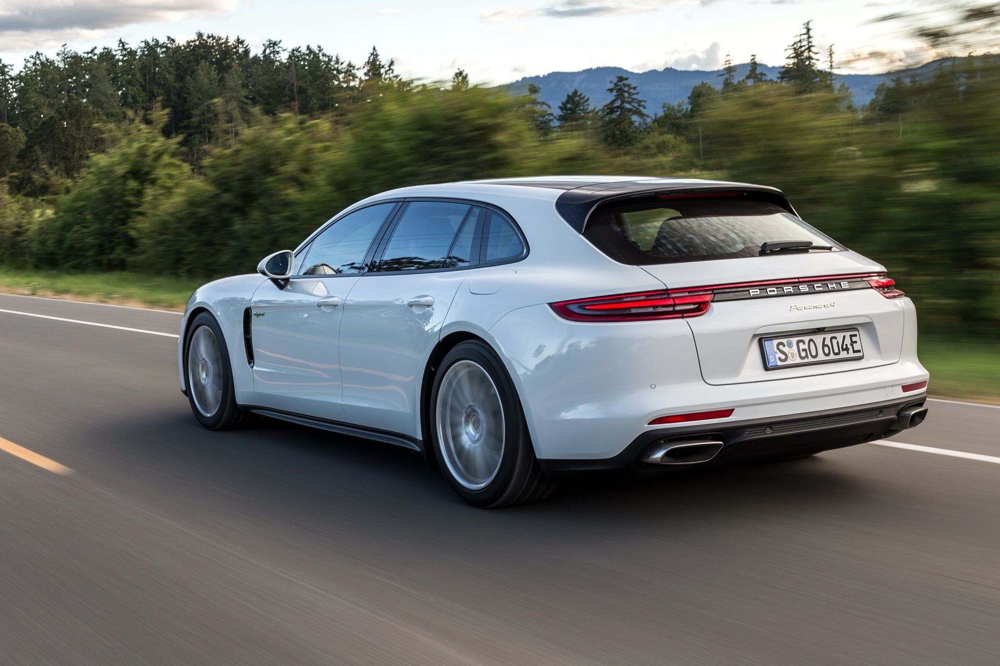
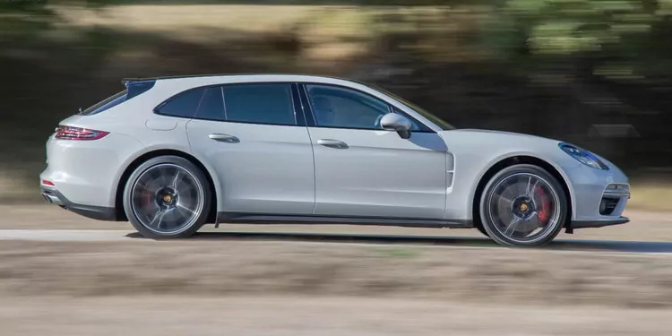

Après 6 mois de commercialisation pour les modèles hybrides de la Panamera Génération 2, ceux-ci sont très clairement plébiscités par les clients Porsche. La gamme a été commercialisée en Europe en juin 2017 avec la Panamera 4 E-Hybrid. Puis Porsche frappait un grand coup en proposant la première déclinaison Turbo S acquise par le biais de l'hybridisation. La Panamera Turbo S E-Hybrid et ses 680 ch cumulés nous avait fortement impressionnée lorsque nous l'avions essayé pour la première fois (Flat 6 no 319 de septembre 2017).Cette voiture est l'incarnation de tous les avantages de la technologie hybride : une forte puissance cumulée à une consommation très raisonnable, tout cela avec en plus des avantages fiscaux parfois conséquents. Il ne faut pas se mentir, comme toute nouvelle technologie, l'hybride essence/électrique a aussi des désavantages, dont l'important supplément de poids qu'elle entraîne… La firme vient de quitter l'Endurance (discipline dans laquelle elle a pourtant brillé avec une voiture hybride, la 919 Hybrid) pour rallier la Formula E. Stuttgart a par ailleurs lancé un très ambition projet avec la Mission E.Prévue pour 2019, elle sera la première Porsche 100% électrique et promet une autonomie de 500 km, un temps de recharge de 80% de la batterie en seulement 15 minutes et un 0 à 100 km/h en moins de 3,5 secondes. Pour atteindre ces objectifs, Porsche investi 700 millions d'euro et va créer 1 200 postes supplémentaires en tout. Porsche s'est par ailleurs associé à Audi, BMW, Mercedes et Ford sur le projet européen IONITY qui vise à construire 400 stations de charge rapide sur les grandes routes du continent d'ici à 2020. "L'avenir de l'automobile, c'est l'électro-mobilité," affirme Albrecht Reimold, responsable de la logistique et de la production chez Porsche (photo). Le message est clair. "www.flat6mag.com"   Les sources : "largus.fr" "asplthate.ch"